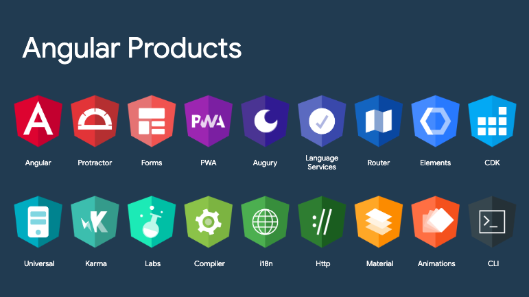
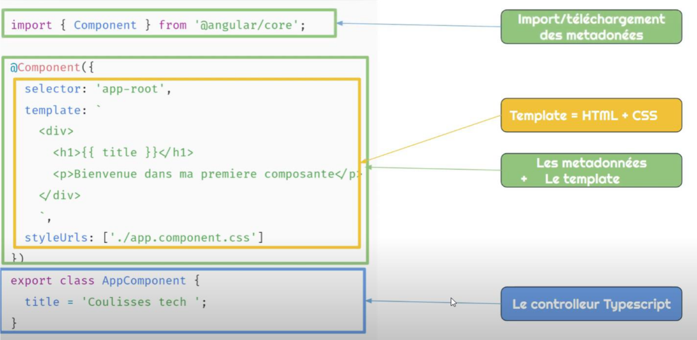
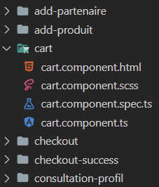
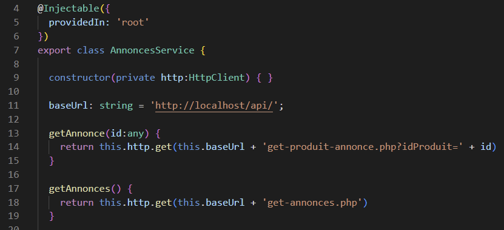
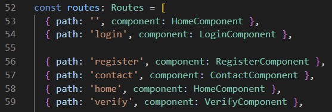

On 2023-03-09
During my 2nd year internship , I had to train myself in the Angular framework in order to be able to carry out the various missions entrusted to me.
What is Angular?
Angular is an open source framework based on TypeScript (a strict syntactic superset of JavaScript transcompiled to JavaScript).
This framework facilitates the creation of web applications, especially single-page web applications. These are accessible via a single web page, which makes the user experience smoother and avoids the loading of new pages for each action. The framework is based on the MVC-type architecture, thus making it possible to separate the data, the visual aspect and the actions for a better management of responsibilities. This architecture is well known for its high maintainability and its ability to improve collaborative work.

Many libraries and packages are available with Angular, I had the opportunity to test, during my internship, Angular Material which allowed me to create forms, tables, customizable buttons on my web project.
How does Angular work?
Angular works from components, representing the different functionalities of the application.
In a component, we find its interface in HTML, its controller in TypeScript as well as its style in CSS in our case:

Then, Angular uses services, which are somewhat like components without interfaces.
In these services, we will come to put functions with http GET or POST requests for access to data in the database.
Following this, to navigate between our pages, between our components, we use routing.
For this, we use the Routes module as below:
A route entered in the url therefore refers to the component associated with it.
What is the interest of the Angular framework?
The main reason for its popularity is that it is easy and simple to use, it also simplifies the development process and structure of JavaScript Code.
Here are the 7 big reasons to use Angular:
1. Code Consistency and Reuse
Angular has a component-based structure which makes the components highly reusable and simplifies the development process. You can create the UI (user interface) with moving components, while ensuring a stable development process for developers.
2. Easy to learn, use and test
AngularJS can be easily learned by people who know JavaScript, HTML and CSS. Learning AngularJS opens up more opportunities for developers in the field of web development.
3. Google support and great community support
It is recognized as one of the most trusted frameworks by members of the application development team. Google's web toolkits allow developers to develop a single, user-friendly application.
4. SPA-Oriented Features
AngularJS and SPAs simply go together, AngularJS supports single-page web application development. The main objective of single page web application development is a faster transition of the website.
5. Two-way data link
By using the two-way data link, the application will simplify its presentation layer. This allows for a more simplistic and less intrusive approach to the DOM display for creating the UI.
6. UI Declarations
The Angular framework uses the HTML source to describe the user interface of the application because it is an intuitive, declarative and less complicated language.
7. Seamless integration and high-end productivity
When implemented for web development projects, AngularJS integrates smoothly with other libraries. AngularJS integration is pre-built with various frameworks such as Wijmo, lonic and Telerik's Kendo Ul.
I would add to all this that, during the build, Angular is compiled, which brings a certain level of security to our application. For example, we are protected from SQL injections.
Sources :